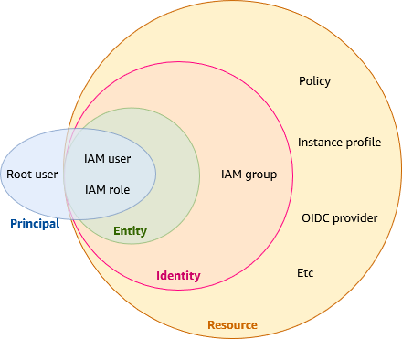
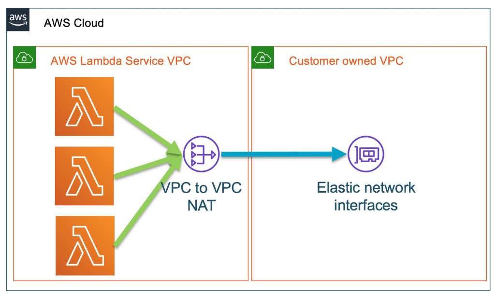
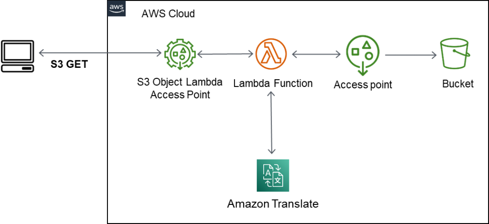
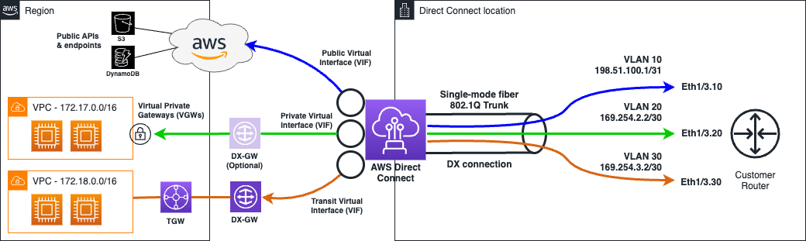

トップページ
作成日：2025/06/08 09:50:02
更新日：2026/01/31 14:54:50
「試験ガイド」にAWS製品の分類が記載されている。
AWSの各機能を学習する場合には、以下の点を記載するようにする。
これは他のAWS資格でも出題される。
AWS Well-Architected フレームワークとはAWSが提唱するAWSクラウドの設計や運用のベストプラクティスにおける指針
AWS リソースを特定し、整理するために使用できるメタデータ。
キーと値のペアを関連付ける。
ユーザーのAWSリソースへのアクセス管理サービス（権限設定）
IAMユーザを作っての運用が推奨
AWS IAM には、以下の用語が定義されている。
(各機能の概念図)

IAMポリシーとは、AWSのサービスやリソースへのアクセスを制御するためのルールを定義するJSON形式のドキュメントです。
誰が、どのリソースに対して、どのような操作を許可または拒否するかを記述します。
これにより、AWS環境におけるセキュリティを強化し、必要な権限を持つユーザーやサービスのみがリソースにアクセスできるように制御できます。
IAM（Identity and Access
Management）では、IAMユーザーやIAMロールに対して「ここまでの範囲内であれば自由に操作を行える」という境界を設定できます。
これを「Permissions Boundary（アクセス許可境界）」と呼びます。
アクセス許可境界が設定されたユーザーは、境界で許可された範囲とIAMポリシーの両方で許可されている範囲でアクションを行えます。
オンプレミスのサーバーや他クラウド上のアプリケーションからAWSのリソースにアクセスさせたい場合、
IAM Roles
Anywhereを利用することで、公開鍵基盤（PKI）で管理されているX.509証明書に基づいて一時的な認証情報（アクセスキーなど）を取得できます。
これにより、長期的なアクセスキーを保存する必要がなくなり、安全にAWS
APIへアクセスできます。
IAMポリシーは以下の要素で構成されます。
リソースを特定するための文字列。
次の例ではアカウント 123456789012 のすべてのリージョンにおけるすべての
Amazon VPC と一致します。
arn:aws:ec2:*:123456789012:vpc/*{
"Version":"2012-10-17",
"Statement": [
{
"Effect": "Allow",
"Action": "s3:ListAllMyBuckets",
"Resource": "*"
}
]
}{
"Version":"2012-10-17",
"Statement": [
{
"Sid": "ExampleStatementID",
"Effect": "Allow",
"Principal": "AWS": "555555555555",
"Action": "acm-pca:DescribeCertificateAuthority",
"Resource": "arn:aws:acm-pca:us-east-1:123456789012:certificate-authority/CA_ID"
},
]
}AWS Organizationsの許可をあたる場合には、“aws:PrincipalOrgID”の「グローバル条件キー」を追加する
IAMデータベース認証（IAM Database Authentication） は、Amazon RDS や Amazon Aurora に接続する際に、IAMの認証情報（トークン）を使ってログインできる仕組み
AWS IAM Identity Center(旧AWS Single
Sign-on)とは、AWSのIDアクセス管理サービスとなります。
ユーザーやアプリケーションにわたるアクセスを一元管理し、サードパーティ製品へのログインが可能となり、シングルサインオンを実現します。
Identity CenterはAWS
Organizationsとの組み合わせが推奨されており、組織で管理するAWSアカウントに対するシングルサインオンを実現します。
AWS IAM Access Analyzer は、AWSリソースに紐付いているポリシーを検査し、意図しない公開設定がされていないかを検出および可視化するツール。
Security Token Service (STS)とは、限定的で一時的なセキュリティ認証情報を提供するサービスです。
信頼ポリシー(AssumeRole)は、STSのアクションの一つです。 まずはIAMユーザーがSTSに対してIAMロールが欲しいとリクエストを送り、認証情報を返してもらいます。 その際に、所有者からロールを代行（AssumeRole）し、そのロールの実行ができるようになります。
Amazon
Cognitoは、アプリケーション開発者が、独自のIDプロバイダやソーシャルIDプロバイダを使用してユーザー認証・認可を提供できるサービスです。
Cognitoは、簡単な設定で、モバイルやWebアプリ向けのユーザー認証機能を提供します。
ユーザープールは、Amazon Cognito
のユーザーディレクトリです。ユーザープールを使用することで、ユーザーはウェブまたはモバイルアプリに
Amazon Cognito 経由でサインインする、またはサードパーティー ID
プロバイダー (IdP) 経由でフェデレートすることができます。
ユーザープールは次の機能を提供します。
認証済みまたは匿名のユーザーに対して、AWSリソースにアクセスするための一時的な認証情報（STSクレデンシャル）を発行する機能です。
Cognitoのアダプティブ認証は、新しいデバイス、位置、ネットワーク情報など、通常とは異なる状況でのログインを検知すると、動的にセキュリティレベルを調整する仕組みです。
通常はパスワードのみの認証設定でも、異なる状況を検知すると多要素認証(MFA)などを要求できます。
AWS上でMicrosoftのADを提供する．Windowsインスタンス群を管理することができます。
AWS
RAMは、AWSリソースを組織内のアカウントやサービスと簡単に共有するためのサービスです。
クロスアカウントでのリソース共有が可能となる。
AWSの使用状況を継続的に監査してリスクとコンプライアンスの評価が実行できるサービスです。
ユーザ名やパスワードなどのシークレット情報(秘密情報)を安全に格納できるAWSサービスです。
主にDBにアクセスする際の認証情報を管理して、自動更新機能も存在します。
AWS のサービスと接続されたリソースを使用した SSL/TLS
証明書のプロビジョニングと管理を行っています。
SSL/TLS証明書を作成・管理しています。
S3やEBSの暗号化キーを作成管理します。管理は簡易的に実行します。
暗号化ヘルパーは、Lambda関数で使用する環境変数をAWS KMSを使用して暗号化し、実行時に復号して利用するためのツールです。 AWS Key Management Service（KMS）は、暗号化に使用する鍵（キー）を作成・管理するサービスです。暗号化ヘルパーはKMSを利用して環境変数を暗号化し、安全に管理することができます。
専用のハードウェアデバイスを用いて暗号化鍵を生成・管理します。高性能の管理機能がある。
S3バケット内のオブジェクトを分析し、個人情報（PII）などの機密データを識別・分類します。
複数のAWSアカウントを含め、すべてのセキュリティアラートを1箇所に集約。
セキュリティのベストプラクティスのチェックを行いアラートを集約し自動修復を可能にするクラウドセキュリティ体制管理サービス。
AWSアカウント内の悪意のあるアクティビティや不正な行動を検出することができます。
AWSのワークロードに関して、ソフトウェアの脆弱性やネットワーク上への意図しない公開がないかを継続的にスキャンすることができる脆弱性管理サービスです。
潜在的なセキュリティ問題や不審なアクティビティの根本原因を、簡易的に分析および調査して、素早く特定することができます。
Amazon Elastic Compute Cloud (Amazon EC2) は、スケーラブルなコンピューティング能力をクラウドで提供する、AWSの中心的なウェブサービスです。
Amazon EC2 は、様々なユースケースのために最適化されたインスタンスタイプの幅広い選択肢を提供している。
[ファミリー][世代](追加機能).[サイズ]以下のようなインスタンスタイプが存在します。
プレイスメントグループは、複数のEC2インスタンスを論理的にグループ化し、 インスタンス間での低遅延な通信や、ハードウェア障害による影響を軽減できる機能です。
プレイスメントグループのうち「クラスタープレイスメントグループ」は、グループ内のEC2インスタンスを単一AZ内の物理的に近い距離に配置するので、
各EC2インスタンス同士の通信は遅延が発生しにくく高速な通信が可能になります。
また、同一AZ内のデータ転送は料金が発生しないためコスト効率も良好です。
EC2の料金タイプは以下の通りです。
Savings Plansには3つのタイプがあります。それぞれ対象となるサービスが異なります。
EC2インスタンスの数を処理負荷に応じて自動で増減させるサービス
以下はEC2インスタンスの集約メトリクスとなります。 デフォルトで定義されて、グループ内の全EC2インスタンスから集約されたデータに基づいています。 スケーリングポリシーのトリガーとして一般的に使用されます。
以下はCloudWatchなどと連携することで利用可能なメトリクスとなります。
Auto Scaling グループは、EC2 のステータスチェック、ELB のヘルスチェック、またはカスタムヘルスチェックのいずれかをヘルスチェックタイプとして設定できます。
Auto Scalingグループをクラスタープレイスメントグループに所属した複数のインスタンスで起動します。
SQSのメッセージキューAuto Scalingの条件にすることで、Auto Scalingを実現することが可能となります。
たくさんのコンピューターを一つにまとめて使うためのツールです。
EFA（Elastic Fabric Adapter）と連携して利用されます。
AWSのインフラストラクチャとサービスをオンプレミスまたはエッジロケーションで使用するためのサービスです。
自社データセンターや拠点の中にAWSのラックまたはサーバーを配置して、AWSのクラウドサービスと同じように使うことができます。
バッチコンピューティングワークロードを実行することができます。
ECSとは、AWSが提供するフルマネージドコンテナオーケストレーションサービスのことです。
コンテナを実行・管理するサービス
EC2タイプとFargateタイプがあり、サーバーの構築・管理が必要ないFargateが推奨されています。
Amazon ECS タスクに対しては、IAMロールを関連付けることができます。 IAM ロールで付与されるアクセス許可は、タスクで実行中のコンテナに対しても発行することができます。
Amazon Elastic Container Service (ECS) Anywhere は、インフラストラクチャ上でコンテナワークロードを実行および管理できるAmazon ECS の機能です。 AWS外部にあるオンプレミス環境などのサーバーや仮想マシンをECSクラスターに登録し、コンテナを実行や管理することができます。
AWSまたはオンプレミスでKubernetesを実行するサービスです。
Horizontal Pod Autoscaling(以降､HPA)はCPU負荷などメトリクスに応じてDeploymentに命令を送りReplica数を制御する機能です｡
Dockerコンテナイメージを保存・管理・デプロイできるコンテナレジストリサービス。
コンテナイメージを登録・管理するサービス
AWS Fargateとは、Amazon Elastic Container Service (ECS) と Amazon
Elastic Kubernetes Service (EKS)
で動作する、ホストマシンを意識せずにコンテナを実行できる環境です。(運用管理が移管されている)
コンテナ向けサーバーレスコンピューティング
AWS
Fargateとは、AWS上でコンテナをサーバーレスで実行することができます。
コンテナ管理機能として以下の機能を有しています。
AWS上でのそれぞれの役割は以下となります。
WS Load Balancer Controllerは、Amazon EKSやAmazon
EC2上で動作するKubernetesコントローラーです。
AWSのロードバランサーであるALBやNLBとKubernetesのリソース定義をつなぐことができます。
EKSクラスターにLoad Balancer
Controllerをデプロイすると、Kubernetes側で必要な設定を行うだけで自動的にALBやNLBがプロビジョニング・管理されます。
S3にファイルが格納されたらイベント駆動で、S3、EventBridge、SQS、Lambdaと次々数珠つなぎで処理が行われます。
または、API Gateway + Lambda + RDS
Proxyでの構成でRDSとの連携が可能。(頻出のユースケース)
AWS
Lambdaとは、サーバーレスでコードを実行することができるイベントドリブン型(イベント駆動型)のサーバーレスコンピューティングサービスです。
AWSでは、様々なサービスが動作をしており、これらがどのように実行されたかをイベントとしてキャッチしてコードを実行することができます。
VPC Lambdaとは、Lambda関数からプライベートサブネット内のAWSリソースにアクセスさせたい場合の仕組みです。
(構成図)

Simple Queue
Serviceの略で、フルマネージドのキューイングサービス。
キューイングとは異なるソフトウェア間でデータの送受信する手法の一つ
データを一時的に溜め込む。処理失敗によるデータの損失を防ぐことができます。
順序を保証しない標準キューと順序を保証し重複を防ぐFIFOキューがあります。
デッドレターキュー：配信不能メッセージを保持する場所
Amazon Simple Notification Service (Amazon SNS)
は、サブスクライブしているエンドポイントまたはクライアントへのメッセージの配信または送信を、調整および管理するウェブサービスです。
複数のアプリケーションやユーザーに対して同時にメッセージを配信します。
標準トピックと順序を保証するFIFOトピックがある．FIFOトピックを指定した場合SQSのみ通知を受け取れる。
Amazon
EventBridgeは、AWSのサーバーレスイベントバスサービスで、アプリケーション間の疎結合を促進し、イベント駆動型アーキテクチャを構築するためのツールです。
AWSサービスや他アプリからのイベントを受け取り，ターゲットとなるAWSサービスを実行します。
EventBridgeのAPI
destinations（API送信先）は、外部APIとの連携を簡単に行うことができる機能です。
ベントが発生した際に外部のエンドポイントに対してHTTPSリクエストを非同期に送信することが可能で、例えば、S3バケットに新しいオブジェクトが追加されたときに外部の監視サービスに通知を送るなど、外部システムとの連携を柔軟に実現できます。
Amazon RDS Proxyとは、コネクションプーリングや自動フェイルオーバー等のセッション管理を完全マネージドで実行する機能。
AWSコンピューティングおよびストレージサービスを5Gネットワーク内に組み込んで超低レイテンシーなインフラを提供します。
AWSのサービス（Lambda、API
Gateway、DynamoDBなど）を使って、サーバーレスアプリケーションを構築できるフレームワークです。
Serverless Frameworkと比較されやすい。
LAMP, Nginx、MEAN、Node.js
などの事前設定された開発スタックを使用して構築された仮想サーバ
AWSが公開しているSAA試験のシラバスの記載で、Amazon
Lightsailは出題範囲から外されてます。
Amazon EBS は、Amazon Web Services (AWS)
が提供する高性能なブロックストレージサービスで、Amazon EC2
インスタンスに接続して使用されます。
ブロックストレージ。16TBまで利用可能。EC2インスタンスのローカルストレージ
EBSのスナップショットのスケジューリングや世代管理をすることが出来る
こちらはインスタンスに関係なくどんと用意されているストレージです。
グローバルサービスといって、同一リージョン内のリソースが共通で使用することができます。
様々な場所から共通でアクセスできる保存ボックスです。
オブジェクト無制限
HTTP/HTTPS経由でデータにアクセス
ストレージクラスのそれぞれの特徴は以下のとおりとなります。
| S3ストレージクラス | 特徴 | 推奨される用途 |
|---|---|---|
| Amazon S3 Standard | アクセス頻度の高いデータ向けに高い耐久性、可用性、パフォーマンスのオブジェクトストレージを提供します。 | アクセス頻度の高いデータに適しています。 |
| Amazon S3 Standard-IA | アクセス頻度は低いが、必要に応じてすぐに取り出すことが必要なデータに適しています。 | アクセス頻度の低い(1回/月以下程度の頻度)データに適しています。 |
| Amazon S3 One Zone-IA | ひとつの AZ にデータを保存するため、S3 標準 – IA よりもコストを 20% 削減できます。 | 1つのAZにのみ保存されるため可用性が低下するために可用性を求めないデータに適しています。 |
| Amazon S3 Intelligent-Tiering | パフォーマンスへの影響、取り出し費用、運用上のオーバーヘッドなしに、アクセス頻度に基づいてデータを最も費用対効果の高いアクセス階層に自動的に移動することにより、きめ細かいオブジェクトレベルでストレージコストを自動的に削減できる。 | アクセスパターンが不明なデータに適しています。 |
| Amazon S3 Glacier Instant Retrieval | アクセスされることがほとんどなく、ミリ秒単位の取り出しが必要な、長期間有効なデータ用に最低コストのストレージを提供するアーカイブストレージクラスです。 | 低遅延取得(ミリ秒単位)が求められるアーカイブ用データに適しています。 |
| Amazon S3 Glacier Flexible Retrieval | S3 Glacier Flexible Retrieval は、1 年に 1〜2 回アクセスされ、非同期で取り出されるアーカイブデータ向けに、(S3 Glacier Instant Retrieval よりも) 最大 10% 低いコストのストレージを提供します。 | 数分から数時間のデータ取得が求められるアーカイブ用データに適しています。 |
| Amazon S3 Glacier Deep Archive | S3 Glacier Deep Archive は、Amazon S3 の最も低コストのストレージクラスであり、1 年のうち 1 回か 2 回しかアクセスされないようなデータを対象とした長期保存やデジタル保存をサポートします。特に、金融サービス、ヘルスケア、パブリックセクターなどの規制が厳しい業界のお客様を対象としており、コンプライアンス要件を満たすために 7～10 年以上データセットを保管するように設計されています。 | 1年に1回未満しかアクセスされないアーカイブ用データに適しています。 |
Amazon
S3のオブジェクトへアクセスする際に発生する転送料金は、S3バケットの所有者が支払います。
S3オブジェクトを共有する際にバケットの所有者が転送料金を負担したくない場合は、バケットを「リクエスタ支払い」に設定するとアクセス元に対して転送料金が請求されるようになります。
S3バケットのストレージ使用状況やアクティビティに関するメトリクスを可視化する機能
S3マルチリージョンアクセスポイントは、複数のリージョンに配置されたS3バケットへの統一的なアクセスポイントを提供することで、パフォーマンスと可用性を向上させる機能です。
マルチリージョンアクセスポイントを作成すると、S3は自動的に1つのグローバルなアクセスポイント（グローバルエンドポイント）を生成し、クライアントはグローバルエンドポイントを通じて複数リージョンのバケットにアクセスできるようになります。
ユーザーとS3バケット間のデータ転送を高速化する機能
ユーザーと地理的に近いエッジロケーションから、高パフォーマンスなAWSグローバルネットワークを経由してS3バケットへアクセスするため、安定した高速転送が可能
S3のバージョニング機能を使用して管理されているオブジェクトを削除する際に，MFAデバイスの認証が必要となる機能。
誤削除の防止になる。
S3のオブジェクトロック機能とは、S3内のファイルが削除されないように保護する機能です。
ボールトというのは、アーカイブされたデータ（動画や画像、テキストなど）を保管しておく保管庫みたいなもの。
ボールトロックはその保管庫をロックして、アクセスや削除、編集操作を禁止すること。
AWS Credentialsを持たないユーザに対してS3 Bucketに一時的にアクセスさせることを目的として発行する一時的なURL

データがS3に保存されるタイミングで自動的にS3が暗号化を行う。データを取り出すときはS3がデータを復号することができます。
データをS3へアップロードする前にクライアント側で暗号化を行い暗号化したデータをそのままS3に保存します。
ファイルストレージ
無制限の利用が可能。複数のEC2インスタンスから利用可能
Amazon
FSxはAWSが提供するファイルストレージサービス。ファイルストレージ
64TB可。
HPC環境に対応したLustre、CIFS,SMBプロトコルに対応したWindowsタイプの種別がある。
世界で最も人気のある高性能ファイルシステムをベースに構築された、フルマネージド型共有ストレージです。
オンプレミス環境のストレージをAmazon S3にシームレスに接続することができるハイブリッドストレージサービス。 オンプレからAWSのストレージサービスへのアクセスを高速かつセキュアにおこなう。
AWS Storage
Gatewayが仮想的にiSCSIの機能をオンプレミス側に提供する機能
ゲートウェイを管理するには、Internet Small Computer System Interface
(iSCSI)
ターゲットとして公開されているボリュームまたは仮想テープライブラリ (VTL)
デバイスを使用します
ボリュームゲートウェイの場合、iSCSI ターゲットはボリュームです。
テープゲートウェイの場合、ターゲットは VTLデバイスです。
AWS Elastic Disaster Recovery (AWS DRS) は、オンプレミスやクラウド環境からAWSへの災害復旧ソリューションを提供するサービスです。
RDSは、フルマネージド型のリレーショナルデータベースサービス
RDSリードレプリカは、Amazon RDSインスタンスからの読み取り操作をオフロードするための仕組みです。
Multi-AZ Cluster は DB Engine
のネイティブなレプリケーションを利用して、 Writer から各々別の AZ にある
2台の Reader へレプリケーションします。
フェイルオーバー時は最新の変更レコードを持っている Reader を Writer
へ昇格させるので高速に切り替えられます。
Multi-AZ DB Clusterは、従来の Multi-AZ Instance
と異なりレプリケーション先のインスタンスへのアクセスが可能であり、Writer
のロールがインスタンス間で移動するため複数のエンドポイントの指定方法があります。
3つのアベイラビリティゾーンにまたがって配置されるため、可用性がさらに強化されています。
「RDS DBインスタンス」と「RDS DBクラスター」では、以下の違いがあります。
(Multi-AZの違い)
| 項目 | Multi-AZ Instance | Multi-AZ DB Cluster | Multi-AZ Cluster |
|---|---|---|---|
| エンジン | RDS全エンジン | RDS for MySQL/PostgreSQL | Aurora |
| RDSが利用するAZ数 | 2 | 3 | 任意のAZ数 |
Amazon Aurora
は、AWSが提供する高性能かつスケーラブルなリレーショナルデータベースエンジンです。
Auroraは、MySQL と PostgreSQL
互換の2つのバージョンを提供(MySQL/PostgreSQL互換のデータベースエンジン)し、エンタープライズグレードの性能、スケーラビリティ、可用性を持ちながら、商用データベースの1/10程度のコストで利用できます。
オンデマンドで自動スケールし、コスト効率を最適化するサーバーレスオプション。
Amazon DynamoDB
は、AWSが提供するフルマネージド型のNoSQLデータベースサービスです。
key-value型のNoSQLを提供。
シンプルな構造でありデータアクセスのパフォーマンスは非常に高い
DynamoDBキャパシティモードは、以下の2種類が存在します。
DynamoDB
Streamsは、テーブルに対して行われた直近24時間の変更（追加・更新・削除）をログとして保持する機能です。
ストリームを利用することで、いつ・どのような更新が行われたかを追跡できます。
DynamoDBテーブルを複数のリージョンにまたがって運用できるサービスです。 複数のリージョンにDynamoDBテーブルが自動的にレプリケートされ、ユーザーは地理的に近いリージョンのDynamoDBテーブルへ高速な読み込みと書き込みが可能になります。 データのレプリケーションは通常1秒以内に完了し、リージョン間のデータ冗長化によって高可用性が確保されます。
差分バックアップを自動的に取得する機能。
手動でバックアップする方法はオンデマンドバックアップとなります。
特定の時点で自動的にデータ項目を削除する機能
DynamoDBは高可用性とスケーラビリティを備えたNoSQLデータベースサービスで、セッションデータの保存に適しています。
DynamoDBテーブルへの書き込みなどのトランザクション発生時に特定の処理を実行させることができる機能。
1つのオペレーションとして複数の項目の追加、更新、または削除が必要となる複雑なビジネスワークフローを管理することができます。
DynamoDB
Accelerator（DAX）は、DynamoDBのインメモリキャッシュクラスタです。
マイクロ秒レベルのパフォーマンスにまで向上させることができます。
キャッシュを利用して読み込みは高速化が可能。ただし、書き込みは高速化できない。
ElastiCacheはフルマネージドのKey-Value型インメモリデータベース
キャッシュなど一時的なデータ保存に利用．高速なアクセスが可能
データの永続保持ができるRedis, 一時的で高パフォーマンスなMemcached
JSON形式のドキュメントデータに対応
MongoDBと互換性がある
Apache Cassandra互換のマネージドデータベースサービス
高速かつスケーラブルなサーバレス時系列データベースサービスです。
Amazon Quantum Ledger Database (Amazon QLDB))
はフルマネージド型の台帳データベースで、信頼された中央機関が所有する、透過的でイミュータブルであり、暗号的に検証可能なトランザクションログを提供します。
2025/7/31でサポート終了。
サーバーレスグラフデータベース
AWS内に構築できるプライベートなネットワーク環境
VPCの設定でDNSを設定することができます。
VPC内のインスタンスに対してDNSホスト名を付与するかどうかを制御する設定です。
VPC内のインスタンスに対してDNSホスト名を付与するかどうかを制御するための設定となります。
以下の特徴があります。
AWSの仮想機器に割り当てるIPアドレスの種別について以下記載します。
Message Passing Interface (MPI) を使用する高性能計算 (HPC)
アプリケーションおよび NVIDIA Collective Communications Library (NCCL)
を使用する Machine Learning (ML) アプリケーションを、数千の CPU や GPU
にスケールできる
EC2 ネットワーク機能として、サポートされている EC2
インスタンスにおいて追加料金なしで利用できる
拡張ネットワーキング（Enhanced Networking）とは、Amazon
EC2インスタンスのネットワーク性能を向上させる機能です。
インスタンス間での高スループット・低レイテンシーを実現できるため、リアルタイム性が求められるアプリケーションに最適です。
追加料金は掛からないです。
VPCフローログは、VPCのネットワークインターフェイスとの間で行き来するIPトラフィックに関する情報をキャプチャできるようにする機能です。
VPC内のENIで通信するネットワークトラフィック情報をキャプチャすることができます。
S3やCloudWatchに保存されます。
ネットワークACLは、VPC内でサブネット単位にネットワークアクセスを制御するファイアウォールです。
IPアドレスを元に許可ルールと拒否ルールの両方を設定可能です。
サブネットごとに制御するファイアウォールで、許可と拒否の両方設定・ステートレスが特徴となります。
インスタンスごとに制御するファイアウォールで、許可ルールのみ設定・ステートフルが特徴となります。
| 項目 | ネットワークACL | セキュリティグループ |
|---|---|---|
| ルールの単位 | サブネット単位 | リソース単位 |
| 設定方法 | 許可ルールと拒否ルール | 許可ルールのみ |
| 永続性 | ステートレス | ステートフル |
| 適用方法 | ルール番号順にルールを適用 | 全てのルールを適用 |
NAT ゲートウェイは、ネットワークアドレス変換 (NAT) サービスのことです。
NAT GatewayのNW構成は以下に従う。
Amazon API
Gatewayとは、AWSが提供するAPIの作成・公開・管理を行うサービスです。
RESTfulAPIも提供することが可能です。
API
Gatewayで作成したAPIには、カスタムドメイン名を設定できます。
カスタムドメイン名を作成する際は、AWS Certificate
Manager（ACM）で管理されるSSL/TLS証明書を選択します。
VPCピアリング接続は、二つのVPC間をプライベートIPアドレスで安全に接続するためのAWSのサービスです
IPv4
CIDRブロックは、TCP/IPプロトコルでは通信先を特定するためにVPC内で設定します。
異なるリージョンのVPC間におけるセキュリティグループの設定には、別リージョンのVPCのセキュリティグループをインバウンドルール内で指定することができません。
そのために、その代替手段としてVPCのCIDRブロックを指定する必要があります。
ローカルピアリングはリージョン内でVPCを接続します。
VPC間でIPv4
CIDRブロックが重複している場合、VPCピアリングでは通信できない。
一方、PrivateLinkは、VPC間でCIDRブロックが重複していても接続可能です。
リモートピアリングはリージョン間でVPCを接続します。 リモートピアリングもローカルピアリングと同様にVPC同士のIPv4 CIDRブロックが重複させてはならないです。
VPCと他のサービス間の通信を可能にするVPCコンポーネント(仮想デバイス)です。
VPCエンドポイントを作成することで、VPC内のインスタンスとVPC外のサービスをプライベート接続で通信できるようになります。
VPCエンドポイントにはゲートウェイ型とインターフェイス型の2種類があり、それぞれ利用できるAWSサービスが異なります。
ゲートウェイ型エンドポイントはS3、DynamoDBに対するVPC内からのアクセスすることができます。
インタフェース型エンドポイントはENIを設定し、オンプレミスや他のVPCからのアクセスすることができます。
インタフェース型エンドポイントは多様なサービスで利用することができます。
| 種別 | 特徴 | サービス |
|---|---|---|
| ゲートウェイ型 | VPC外からの接続不可 ルートテーブルにエンドポイントのルート追加 パブリックIPでの接続可 セキュリティグループのアタッチ不可 |
S3とDynamoDBのみ |
| インタフェース型 | VPC外からの接続可 プライベートIPで接続可 ENIを保持 |
様々なサービスで利用可能 |
サブネットに特殊ルーティングを設定し接続できるようにします。
ゲートウェイ型はAmazon S3やAmazon DynamoDBで利用できます。
VPCエンドポイントを通じてデータをS3バケットに転送する場合、そのデータ転送はAWSのプライベートネットワーク内で行われるためデータの外部への露出もありません。
また、ゲートウェイ型VPCエンドポイントは利用料金が無料で、データ転送料金も発生しないため、転送データ量が多いアプリケーションにとっては大きなコスト節約につながります。
プライベートサブネット内のリソースからVPC外のリソースに対し，インターネットを経由しないアクセスを可能にします。
VPCエンドポイントを作成すると、VPC内のリソースはVPCエンドポイントからVPC外のAWSサービスへアクセスできるようになります。
VPCエンドポイントの接続先を制限するには「VPCエンドポイントポリシー」を使用します。
VPCエンドポイントポリシーは、VPCエンドポイントのゲートウェイ型とAWS
PrivateLink（インターフェイス型）の両方で利用できます。
ネットワークインタフェース（ENI）にプライベートIPアドレス付与して接続できるようにします。
AWS PrivateLinkとは、Amazon
VPC間をプライベート接続できるサービスです。
データをインターネットに公開することなくVPCとAWS
のサービス間の接続を確立します。
ゲートウェイ型VPCエンドポイント、インターフェース型VPCエンドポイントともに、AWS
PrivateLinkを利用します。
DirectConnetとは、オンプレとAWS間で物理的な専用回線を構築するNW回線です。
(NW構成図)

AWS Direct Connectパートナーによって管理される物理的なDirect
Connect接続を複数のAWSユーザーで共有する形態です。
このタイプの接続は通常1Gbps以下の速度で提供されます。（例：50Mbps、100Mbps、300Mbps、500Mbps）
AWS Direct Connectで使用するVIF（Virtual
Interface、仮想インターフェース）とは、オンプレミス環境とAWS環境を接続する際に、物理的な回線である「Connection」上に設定される論理的なインターフェースのことです。
VIFは、AWSリソースへのアクセスを可能にします。
プライベートVIF、パブリックVIF、トランジットVIFの3種類があります。
仮想プライベートゲートウェイ(VGW)とは、Direct
Connect（またはVPN）を経由して、VPCに接続する際に利用するゲートウェイです。
オンプレミス環境に接続する時にAWS側（VPC）に取りつけるゲートウェイです。
オンプレのルーターとAWSのネットワークに接続する際に必要とするVIFとプライベートゲートウェイの間に追加するコンポーネントであり複数のVIFおよびVGWが接続できるようになります。
オンプレから複数のVPC間との通信を実現することができます。
複数のVPCや複数のオンプレミスネットワークを相互に接続するハブ機能を持つネットワークサービスです。
Amazon VPC、AWS
アカウント、オンプレミスネットワークを単一のゲートウェイで接続することができます。
Site-to-Site VPNは、オンプレミスからVPCのリソースへセキュアなアクセスを構成します。
カスタマーゲートウェイデバイスは、オンプレミスネットワーク
(Site-to-Site VPN 接続のユーザー側)
で所有または管理している物理アプライアンスまたはソフトウェアアプライアンスです。
ユーザーまたはネットワーク管理者は、Site-to-Site VPN
接続で動作するようにデバイスを設定する必要があります。
AWS Site-to-Site
VPNで使用する仮想プライベートゲートウェイとVPNトンネルは、機器障害に対する高可用性を保つためにAWS側で冗長化されています。
一方、カスタマーゲートウェイはオンプレミス内の機器なので、高可用性を保つにはAWSユーザー側で冗長化する必要があります。
「AWS Direct Connect」と「Site-to-Site
VPN」を同時に利用して、冗長化することが可能です。
通常時はDirect Connectを利用し、Direct Connectの障害時はSite-to-Site
VPNを利用します。
自宅の個人PC等からVPCに向けてセキュアなアクセスを提供します。
VPN監視はCloudWatchを利用します。
AmazonRoute53は可用性が高くスケーラブルなドメインネームシステムウェブサービス(DNS運用サービス)です。
ルーティングポリシーの設定やヘルスチェックが可能
各アベイラビリティゾーンに組み込まれた AWS 管理の DNS
サーバーであり、「Amazon DNS サーバー」または「Amazon Provided
DNS」とも呼ばれます。
デフォルトでは、VPC 内に起動された EC2 から名前解決を行う際は、VPC の
CIDR + 2 にプロビジョニングされた Amazon Route 53 Resolver
を用いるよう設定されています。
CIDR が「10.0.0.0/16」の VPC
なら「10.0.0.2」、「172.31.0.0/16」なら「172.31.0.2」が Amazon Route 53
Resolver の IP アドレスとなります。
負荷分散装置。HTTP/HTTPSに対応したALB，TCP/UDPに対応したNLBがある。
ELBではCookieベースのスティッキーセッションが利用可能です。
アベイラビリティーゾーンが2つあり、各アベイラビリティーゾーンにターゲットノード（EC2インスタンス）の起動数に偏りがあってもトラフィックを均等に各EC2インスタンスへ分散する機能です。
Network Load Balancer は、開放型システム間相互接続 (OSI) モデルの第 4 層で機能するLB
ALBは、AWSが提供するロードバランシングサービスの一つで、WebアプリケーションやAPIへのアクセスを複数のターゲット（EC2インスタンス、コンテナ、IPアドレスなど）に分散させる役割を担います。
ALBではCookieベースのスティッキーセッションが利用可能です。
ALBとEC2オートスケーリングの組み合わせがユースケースとなります。
ただし、EC2側で”ELB有効化”とします。
Amazon
CloudFrontは、ウェブサイトやアプリケーションに対するコンテンツの配信スピードを向上させるための高速なコンテンツ配信ネットワーク(CDN)サービスです。
ALBやS3をオリジンに指定しその配下にあるコンテンツを，ユーザーに最も近いエッジロケーションを通して高速配信することができます。
アクセス可能な国を制限することができます。
Amazon CloudFrontのOrigin Access Identity（OAI）は、CloudFrontがS3バケットのオリジンにアクセスする際に使用する特別なIDのことです。
オリジンサーバはVPC内部「ALB+EC2」で構成として、CloudFrontの構成は「CloudFront+ALB+S3」で構成するパターンが多いです。
CloudFrontのエッジロケーションのサービス。Lamda関数はユーザーに近いロケーションで実行されます。
CloudFront FunctionsとLambda@Edgeを使用することで、エッジロケーションで実行されるサーバーレス関数によってコンテンツの配信を制御し、カスタマイズした処理が可能になります。
ALB、NLB、EC2の前段に置いてアプリケーションの可用性とパフォーマンスを改善するサービスです。
複数のリージョンで展開しているWebアプリケーションなどへのリージョン間の負荷分散が可能。
ALB，NLB，EC2インスタンス，Elastic
IPアドレスを指定することができます。
AWS Global
Acceleratorは、ユーザーからAWSリソースまでのアクセス経路をAWSグローバルネットワークを利用して最適化するサービスです。
通常、ユーザーがAWSリソースにアクセスする時、AWSリソースがあるリージョンまでに経由するインターネット回線の影響を受けるため、遅延の発生やデータ損失などのリスクがあります。
Global
Acceleratorは、ユーザーと地理的に近いエッジロケーションから高パフォーマンスなAWSグローバルネットワークを経由してAWSリソースへアクセスするため、遅延の発生やデータ損失などのリスクを少なくします。
VPC LatticeはVPC向けのリバースプロキシサービスです。VPCを跨いだ通信を可能します。
脆弱性を突く攻撃（クロスサイトスクリプティングやSQLインジェクションなど）からの保護にはAWS
WAFを使用するのが適切。
クロスサイトスクリプティングやSQLインジェクションからWebアプリを保護。
Web ACLでアクセス可能な地域を制限することができます。
保護パック (ウェブ ACL) を使用すると、保護されたリソースが応答するすべての HTTP(S) ウェブリクエストをきめ細かく制御できます。
AWS Shieldは、DDoS攻撃からの保護に特化したサービスです。
マネージド DDoS
保護でアプリケーションの可用性と応答性を最大化します。
DDos攻撃からELBやCloudFrontを保護。
無償のStandardと有償で高度な保護を提供するAdvancedがある。
なお、Shield AdvancedはNLBを保護できますが、API
Gatewayはサポートしていません。
DDos攻撃の強化版
AWS ShieldとAWS WAFはどちらもAWSで提供されるセキュリティサービスですが、主に保護する対象が異なります。
VPC向けに脅威対策を容易に導入できるマネージドネットワークセキュリティサービス。
複数のAWSアカウントやサービスを対象に，firewallのルールを一元的に設定・管理します。
ゲートウェイロードバランサ―
を使用すると、ファイアウォール、侵入検知および防止システム、ディープパケットインスペクションシステムなどの仮想アプライアンスをデプロイ、スケーリング、管理できます。
透過的なネットワークゲートウェイ（つまり、すべてのトラフィックに対して単一の入口と出口ポイント）を組み合わせて、トラフィックを分散しながら、仮想アプライアンスを需要に応じてスケーリングします。
AWS Step
Functionsとは、複数のAWSサービスを統合してアプリケーションを視覚的に構築できるサーバーレスのオーケストレートシステムです。
AWS Step
Functionsを活用すれば、ワークフローの可視化や分散システム管理も簡単に行えます。
複数のAWSサービスをワークフローとして連携させ処理を自動化して、人間の手動操作の完了を待つなど複雑なワークフローを定義することができます。
SaaS アプリケーションとAWS サービス間の双方向のデータフローを自動化します。
異なるデバイスやプラットフォーム間でデータを簡単に同期します。
Apache ActiveMQ および RabbitMQ
用のマネージドメッセージブローカーサービスです。
Amazon MQは、AMQP（Advanced Message Queuing
Protocol）に対応しており、Apache
ActiveMQやRabbitMQといったオープンソースのメッセージブローカーと互換性があります。
そのため、AMQPを使用した既存のアプリケーションからの移行が容易です。
一方、Amazon
SQSはAWS独自規格のメッセージキューイングサービスで、AMQPに対応していません。
Eメール送受信サービス
インフラストラクチャをコードとして扱う。
AWS
CloudFormationとはインフラストラクチャをコード(IaC)化して管理するためのツールです。
AWS Elastic
Beanstalkは、アプリケーションが動作する定番の構成を提供します。
アプリケーションが動作するテンプレート環境を自動で構築することができます。
アプリケーションの開発者は、Elastic
Beanstalkによって用意されている定番構成の中からアプリケーションの実行環境に適したものを選んで数クリックするだけで、環境（インフラ）を作成することができます。
Java、.NET、PHP、Node.js、Python、Ruby、Go、Docker
など言語で開発されたアプリのデプロイに向いてます。
Chefを利用してソフトウェアの設定、パッケージのインストール、データベースのセットアップ、サーバーのスケーリング、コードのデプロイなどが自動化される。
アプリケーションに会話型インターフェイスを設計・構築します。
本番環境や分散アプリケーションを分析およびデバッグするツール
AWS
Organizationsは、複数のAWSアカウントを一元的に管理するためのサービスです。
組織内のアカウントをグループ化（Organizational Units:
OUs）し、ポリシーを適用することで、セキュリティ、コスト、アクセス管理などを効率的に行うことができます。
サービスコントロールポリシー（SCP）は、組織のルート、OU（Organizational
Unit）、AWSアカウントに対して、AWSサービスへのアクセス権限や利用可能なリソースを制限できる機能です。
SCPを用いると、例えばテスト用のアカウント（群）は特定のサービスにしかアクセスできないようにしたり、全てのアカウントに対してMFA（多要素認証）を強制するように設定することなどができます。
組織のアカウントで、プリンシパル(アカウントルート、IAMユーザー、IAMロール)にアクセスできるAWSのサービスアクションを管理することができます。
AWS Organizations のタグポリシーとは、AWS Organizations の機能の一つで、組織内のリソースに付与されるタグを標準化するための機能です。
AWS Organizationsの機能を利用して、タグ編集不可のSCPを設定することができます。
AWS Organizations管理アカウントのBilling and Cost Managementコンソールで、使用するタグ（例: 「Project」タグ）を有効化します。これにより、有効化したタグがCost Explorerのコストレポートに含まれるようになります。
組織内の全てのAWSアカウントの利用料が１つの請求として、まとめてマスターアカウントにされるようになる。
AMIは、指定した別のAWSアカウント、組織、特定のOU全体と共有できます。
OUに属しているアカウントでのAMIアクセスは、AMIの共有設定に該当OUのAmazonリソースネーム（ARN）を追加することで実装可能です。
AWS Control Towerとは、規範的なベストプラクティスに従って、 AWS
マルチアカウント環境をセットアップして管理するための簡単な方法を提供します。
組織のセキュリティとコンプライアンスのニーズを維持しながら複数のAWSサービスを調整します。
ランディングゾーンとは、セキュリティとコンプライアンスのベストプラクティスに基づいた、マルチアカウントの
AWS 環境の事です。
ランディングゾーンを設定すると、Organizationsを利用したマルチアカウント構成が自動的にセットアップされます。
Amazon CloudWatch は、Amazon Web Services (AWS) リソースと AWS
で実行されているアプリケーションをリアルタイムでモニタリングする機能。
AWSサービスの状態を監視します。
AWS環境で実行されたアクションやイベントを記録・追跡し、証跡を管理するためのサービスです。 ユーザーのアクションを監視します。
AWS のベストプラクティスをフォローするためのレコメンデーションを提供するツール AWS環境ベストプラクティスと照会しアドバイスをおこなう。 AWS Trusted Advisorのチェック項目は以下のとおり。
セキュリティーグループを監視し、不適切なルールを設定されているかを確認します。また、AWSリソースの設定も監視します。
AWS Config は、サポートされているリソースタイプの作成、変更、削除を継続的に検出します。AWS Config では、これらのイベントを設定項目 (CI) として記録します。
AWS
Configでは、ACMで管理している証明書の有効期限を対象としたルールを作成できます。
ユーザーが指定した日数以内に有効期限が切れる場合、ルールが非準拠となります。
ルールが非準拠になったことをトリガーにしたAmazon
EventBridgeのイベントルールを作成し、Amazon
SNSから通知することで、設問の要件を満たせます。
AWS Service
Catalogは、システム開発者や管理者が定義したアプリケーションやインフラストラクチャの一部を組み合わせたサービスカタログを作成、管理、配布するため>のサービスです。
AWSでの利用が承認されたIaCテンプレートの作成と管理を支援
これにより、組織全体のAWSリソースの利用を標準化し、ガバナンスを強化し、AWS環境のセキュリティを向上させることができます。
ワークロードに最適な AWS
リソースを推奨し、機械学習を使って過去の使用率メトリクスを分析することで、コストを削減し、パフォーマンスを向上するツールです。
最適なAWSリソースの状態を維持します。
AWS Systems
Managerは、複数のAWSリソースとサードパーティアプリケーションを一元管理するためのサービス
インフラストラクチャの可視化、自動化、セキュリティ、およびコンプライアンスのリスク軽減が可能です
複数のAWSリソースをグループ化し，グループ内リソースの運用データの一元化や運用タスクの自動化などができる．
複数EC2インスタンスのOSバッチ適用，マネジメントコンソールからEC2インスタンスへのログインが可能。
Session Manager はフルマネージド型の AWS Systems Manager
ツールです。
また Session Manager
はマネージドノードの制御されたアクセス、厳格なセキュリティプラクティス、ノードアクセス詳細があるログを要件とする社内ポリシーの尊守を実現しつつ、エンドユーザーが簡単なワンクリックのクロスプラットフォームを使用してマネージドノードにアクセスできるようにします。
AWSのEC2インスタンスやオンプレミスのサーバーに対してリモートでコマンドやスクリプトを安全に実行する機能です。
既存の多数のEC2インスタンスにCloudWatchエージェントをリモートで安全にインストールするのに適した方法です。
サーバーにログインしなくても安全でセキュアに大規模なサーバー群をリモートで管理できるため、踏み台サーバー、手動でのSSH接続などが不要になります。
AWS Systems Manager Automationは、AWSリソースへの操作をランブックに従って自動的に実行するサービスです。
ストリーミングデータをリアルタイムで収集・処理・分析するサービスです。
ストリーミングデータを収集するサービスです。
標準のKinesis Data Streamsコンシューマーは、1シャードあたり2MB/秒を共有しますが、拡張ファンアウトでは各コンシューマーが独立して2MB/秒を使用できます。
ストリーミングデータを各種AWSサービスへ配信(転送)するサービスです。
「消防用ホース」の役割を意味しています。
Kinesis Data FirehoseからLambda関数に送信して、データ変化を実行することが可能となる。
Kinesis上のストリーミングデータをリアルタイム分析するサービスです。
旧製品名は、「Amazon Kinesis Data Analytic」
Managed Service for Apache
Flinkは、Kinesis上のストリーミングデータを処理し、可視化・分析できるサービスで、リアルタイムの分析が可能となります。
Apache Kafkaをマネージドするサービスです。
データレイクハウスのためにSQLを使用して比類のないコストパフォーマンスを大規模に実現するペタバイト級のデータを扱えるデータウェアハウス（DWH）サービスです。
Amazon Redshift の拡張された VPC のルーティングを有効にすると、Amazon
Redshift は Amazon VPC を介して通信します。
拡張されたVPCルーティングが無効の場合、Redshift は AWS
ネットワーク内のその他のサービスなどへのトラフィックを、AWS
独自のグローバルネットワーク経由でルーティングします。
Amazon S3上に保持している数百テラバイトのデータセットに対して分析を行いたいという用途で最適なデータベースサービスです。
複数のデータソースからデータを抽出・変換し、そのデータをターゲットに格納するELTサービスです。
AWS Glueクローラー（Crawler）は、AWS Glueのコンポーネントの一つで、データの中身を自動でスキャンし、スキーマ（データ構造）を推論して、Glue Data Catalogに登録する役割を担います。
AWS Glueは複数のデータソースからデータを抽出し、変換・統合したデータをターゲットへ格納するといったデータ分析における橋渡しの役割を担います。
連続的に実行されるストリーミング抽出/変換/ロード (ETL)
ジョブを作成し、Amazon Kinesis Data Streams、Apache Kafka、Amazon
Managed Streaming for Apache Kafka (Amazon MSK)
などのストリーミングソースからのデータを使用できます。
ジョブはデータをクレンジングして変換し、その結果を Amazon S3
データレイクまたは JDBC データストアにロードします。
ETLとは「Extract（抽出）」「Transform（変換）」「Load（書き出し）」の略語で、具体的にはデータベースやデータレイクからデータをExtract（抽出）し、Transform（変換）して、DWHへLoad（書き出し）する作業を意味します。
データ分析を行うためには、分析対象となるデータをデータソース（データの生成元）からDWHなどのデータ分析基盤に移すことが必要になります。
このような、データソースからデータ分析基盤にデータを変換する作業をETLといいます。
AWSが提供するサーバーレスのインタラクティブクエリサービスです。
S3バケットに対してSQLを実行し、データの分析を行うことができます。
S3に格納されたデータに対して、SQLでクエリを実行し、データ分析を行うことができます。
簡単に利用できるため、データ分析を始めるのに最適です。
テキストの全文検索やログ分析を大量のデータに対して高速に行うためのサービスです。
データを可視化するBIツールのサービスです。
サードパーティーデータを容易に検索やサブスクライブを行うことができます。
ビッグデータの処理や分析を行う．HadoopやSparkを利用するサービスです。
ファイルシステムとしてHDFS(一時的)とEMRFS(S3連携可)を利用することができます。
EMRマネージドスケーリング機能は、クラスターの使用状況を継続的に監視し、必要に応じてコアノードやタスクノードのインスタンス数を自動的に増減することで、パフォーマンスとコストのバランスを最適化する機能です。
従来のAuto
Scalingとは異なり、ルールやしきい値を細かく設定する必要がなく、マネージドスケーリングがワークロードの状況に基づいて適切なクラスター規模に自動的に調整します。
EMRランタイムロールは、クラスターで実行される各ジョブに異なるIAMロールを割り当てる仕組みです。同一クラスター内でも、ジョブごとにアクセス対象リソースを分離して制御できます。
データレイクを構築することができるマネージドサービスです。
Lake Formationでのアクセス制御の方法には「名前付きリソースでのアクセスコントロール」と「タグ（LFタグ）ベースのアクセスコントロール」の2種類があります。
Amazon
DataZoneは、AWS、オンプレミス、サードパーティーに分散されたデータを一元的にカタログ化し、検索・共有・管理を効率化するサービスです。
メタデータの統合管理により必要なデータを特定し、サブスクライブの承認フローを通じて「誰が、どのデータに、どのような目的でアクセスできるのか」を制御して、安全かつ効率的なデータガバナンスを実現します。
Amazon
Athenaとの連携により承認済みデータへの即時クエリ実行も可能で、余分なデータコピーや複雑なポリシー管理が不要となり運用負荷を軽減します。さらに、新規の部門や外部パートナーとのデータ連携にも柔軟に対応できます。
自然言語処理サービスでテキストデータを分析します。
テキストを翻訳します。
自動音声認識サービスで音声をテキストに変換します。 Amazon Transcribeとは、「Polly」とは反対に、自動音声認識サービスで音声をテキストに変換します。
Amazon Transcribe が自動で PII を識別して隠蔽する機能があります。
OCR（光学的文字認識）サービスでドキュメントやPDFからテキストやデータを抽出します。
モデルの構築・学習・デプロイを支援する
デベロッパーやデータサイエンティストが機械学習モデルをあらゆる規模で、短期間で簡単に構築、トレーニング、デプロイできるようにするフルマネージドサービス
時系列予測
オンライン支払い詐欺や偽アカウントの作成などの不正検出モデルを作成
高精度で使いやすいエンタープライズ検索サービス
アプリケーションに会話型インターフェイスを設計・構築する
音声とテキストを使用してアプリケーションに会話型インターフェイスを構築するためのサービス
Amazon Pollyとは、人間の声のような音声を合成することで記事を音声に変換します。
画像認識やビデオ分析を自動化
サーバ(EC2)移行サービス
データベース移行サービス。
処理中も移行元のデータベースは動かしたままで問題ありませんし、oracleからAuroraというような別のDBへの移行もサポートしています。
サーバーやストレージ、ネットワーク機器から設定や使用状況のデータを自動収集し、アプリケーションのリストや動作方法、依存関係を把握するためのサービスです。
オンプレ等AWSとは別環境で稼働しているサーバのスペックや負荷状況などの情報を収集することができます。
シンプルかつ高速なオンラインデータの転送を可能にするためのツールです。
AWS Migration Hub を使用すると、一か所で既存のサーバーを検出し、移行を計画して、各アプリケーションの移行ステータスを追跡できます。
AWS Transfer Familyは、Amazon S3 やAmazon EFS
に対してファイルを送受信できる転送サービスです。
AWS ストレージサービスとの間でファイルの送受信が可能となります。
Snow
Familyオンプレミス上の大量のデータをAWSのストレージへ安全に転送するために、専用の物理デバイスを提供するサービスです。
過去はSnow
Familyにはデータの量や用途ごと複数のサービスがありましたが、現在は「AWS
Snowball Edge」のみ提供されています。
Snowball Edgeは、オンプレミス上の大量のデータを安全にAmazon
S3へ転送するために、専用の物理デバイスを提供するサービスです。
AWSから大容量ストレージを搭載したデバイスが貸し出され、ユーザーが移行対象のデータをデバイスへ取り込みます。その後、デバイスをAWSに返送するとデータがAmazon
S3に保存されます。
AWS Snowファミリーの最小・最軽量のエッジコンピューティング、ストレージ、データ転送デバイスです。 ただし、前世代デバイスのため、2024年11月12日をもってサービス提供が停止されています。
エクサバイト級の大容量データをAWSに高速かつ安全に移行するためのサービスです。
100PB（ペタバイト）のストレージコンテナで、セミトレーラートラックで輸送されます。
ただし、2024年4月ごろにサービス提供が停止されています。
AWSのコストと使用量の経時的変化を可視化
AWS のコストと使用状況を長期にわたって視覚化・理解・管理ができます。
カスタム予算を設定して、コストまたは使用量が予算額や予算量を超えたとき (あるいは、超えると予測されたとき) にアラートを発信
AWS
のコストと使用状況に関する詳細情報に一元的にアクセスが可能となります。
コストと使用状況レポートを作成できる
IAMユーザによっての使用状況が分かる
1年または3年の期間で契約することで割引を受ける。
EC2、Lambda、Fargate、SageMakerが対象。
AWSサービスの中には1年-3年などの一定期間利用を予約することを前提に割引価格で購入可能になるオプションがあります。
主なリザーブド購入オプションは以下のようなものがあります。
負荷状況や設定したスケジュールに従い自動的にスケーリングします。
EC2、ECS、DynamoDBなどが対象です。
ユーティリティ サービスには AWS というプレフィックスが付けられ、 スタンドアロン サービスには "Amazon" というプレフィックスが付けられます。